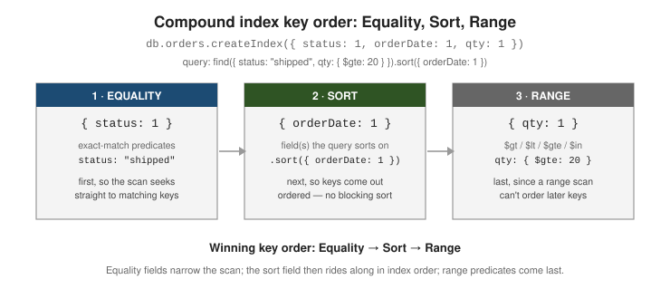

Indexing & query performance
|
This section documents the current MongoDB 8.x server line as published at the MongoDB Server Manual, which is the reference these pages are written and verified against. No specific patch version is pinned. Some capabilities (Atlas Search, Atlas Vector Search, and parts of encryption and backup) are Atlas-only — they are linked, not documented in depth. This content was generated with the assistance of AI and should be verified against the official manual before being relied on in production, since MongoDB iterates quickly. MongoDB: The Definitive Guide, 3rd ed. (Shannon Bradshaw, Eoin Brazil, Kristina Chodorow, O’Reilly, 2019) is listed in this section’s bibliography and was consulted while preparing these pages. It is not the primary or main reference for the section, and it predates the current server line — it targets roughly MongoDB 4.0 / 4.2 — so on any discrepancy the official documentation at mongodb.com/docs/manual wins, and the difference is noted. |
An index is an ordered, on-disk data structure (a B-tree) that lets the query planner locate documents by
value instead of scanning the whole collection. This page covers how to create and inspect indexes, the index
types and the key-order rule that makes compound indexes effective, how to read explain(), and the index
properties you tune per workload. For query syntax itself see Querying
documents, and for text, geospatial and Atlas search indexes see
Text, wildcard, geospatial & Atlas search.
Why indexes exist
Without a useful index, a query is a collection scan: the server reads every document and tests the
predicate on each one, so cost grows linearly with collection size. An index stores just the indexed field
values plus a pointer to each document, kept sorted, so the planner can seek to a value or walk a contiguous
range and touch only the matching documents. The same ordering also satisfies sort() without loading results
into memory first. See Indexes for the overview.
// No index on "email": this must examine every document.
db.users.find({ email: "ada@example.com" }).explain("executionStats").executionStats.totalDocsExamined
// => 500000
db.users.createIndex({ email: 1 })
// With the index: a seek, then one document fetched.
db.users.find({ email: "ada@example.com" }).explain("executionStats").executionStats.totalDocsExamined
// => 1Indexes are not free. Every index adds storage, and every insert, update that changes an indexed field,
and delete must also update each affected index entry, so write throughput drops as index count grows. Index
only the fields your real queries filter, sort, or cover on.
Creating and listing indexes
db.collection.createIndex(keys, options) builds an index; keys maps field names to a direction (1
ascending, -1 descending). Creating an index that already exists (same keys and options) is a no-op. See
db.collection.createIndex().
db.orders.createIndex({ customerId: 1, orderDate: -1 }, { name: "customer_recent" })db.collection.getIndexes() lists every index on the collection, including the auto-generated name and any
properties; db.collection.dropIndex() removes one by name or key spec. See
getIndexes() and
dropIndex().
db.orders.getIndexes()
db.orders.dropIndex("customer_recent")
db.orders.dropIndex({ customerId: 1, orderDate: -1 }) // by key spec, equivalent[
{ "v": 2, "key": { "_id": 1 }, "name": "_id_" },
{ "v": 2, "key": { "customerId": 1, "orderDate": -1 }, "name": "customer_recent" }
]Every collection has a unique index on _id that MongoDB creates automatically and that cannot be dropped; it
is what enforces primary-key uniqueness for the collection. See
The default _id index.
Use db.collection.stats() (or $indexStats) to see index sizes and per-index usage counts before deciding
what to drop:
db.orders.stats().indexSizes // bytes per index
db.orders.aggregate([ { $indexStats: {} } ]) // "accesses.ops" == times the planner picked each indexIndex types
Single-field indexes
A single-field index supports equality, range, and sort on that one field. Direction (1 vs -1) does not
matter for a single-field index — MongoDB can walk it either way. See
Single-field indexes.
db.products.createIndex({ price: 1 })
db.products.find({ price: { $gte: 10, $lte: 50 } }).sort({ price: -1 }) // range + sort, one indexCompound indexes and the Equality, Sort, Range rule
A compound index indexes several fields in one structure, in the order you list them. That order is
load-bearing: a compound index can serve a query only if the query uses a prefix of the key (the first
field, the first two, and so on). { a: 1, b: 1, c: 1 } helps queries on a, on a + b, and on
a + b + c, but not a query on b alone. See
Compound indexes.
To choose the order, apply the Equality, Sort, Range (ESR) rule: put fields matched by an exact equality
first, then the field(s) the query sorts on, then fields matched by a range ($gt, $lt, $gte, $lte,
$in treated as range). This lets the planner seek to the equality-matched sub-tree, read keys already in the
sort order, and finish with a range walk — with no in-memory sort stage. See
The ESR (Equality, Sort, Range) rule.

// Query: equality on status, sort by orderDate, range on qty.
db.orders.find({ status: "shipped", qty: { $gte: 20 } }).sort({ orderDate: 1 })
// ESR key order:
db.orders.createIndex({ status: 1, orderDate: 1, qty: 1 })Multikey indexes
When an indexed field holds an array, MongoDB indexes each array element separately; such an index is called multikey and MongoDB marks it so automatically — there is no special option. A query matches if any array element matches. See Multikey indexes.
db.posts.insertOne({ title: "Indexes", tags: ["mongodb", "performance", "b-tree"] })
db.posts.createIndex({ tags: 1 }) // becomes multikey automatically
db.posts.find({ tags: "performance" }) // matches via the array elementA compound index may include at most one array-valued field. MongoDB rejects an insert that would require two fields of the same compound index to be arrays at once, because the number of index entries would be the product of the two array lengths.
db.carts.createIndex({ itemIds: 1, discountIds: 1 })
db.carts.insertOne({ itemIds: [1, 2], discountIds: ["A", "B"] })
// => cannot index parallel arrays [ itemIds ] [ discountIds ]Covered queries and projections
A query is covered when every field it needs — both the filter fields and the projected fields — lives in
a single index, so the server answers it from the index alone and never fetches the documents
(totalDocsExamined is 0). Covering requires an explicit projection that excludes _id (unless _id is in
the index). See Covered queries.
db.users.createIndex({ status: 1, name: 1 })
// Covered: filter field + projected field both in the index, _id excluded.
db.users.find({ status: "active" }, { _id: 0, name: 1 }).explain("executionStats")
// winningPlan stage: IXSCAN -> PROJECTION_COVERED (no FETCH)
// executionStats.totalDocsExamined: 0Reading explain()
db.collection.find(…).explain(verbosity) shows what the planner chose. Verbosity "queryPlanner" (the
default) reports the winning plan and rejected plans; "executionStats" also runs the query and reports
counters; "allPlansExecution" adds the trial results for every candidate. See
Explain results.
db.orders.find({ status: "shipped" }).sort({ orderDate: 1 }).explain("executionStats"){
"queryPlanner": {
"winningPlan": {
"stage": "FETCH",
"inputStage": { "stage": "IXSCAN", "indexName": "status_1_orderDate_1", "direction": "forward" }
},
"rejectedPlans": []
},
"executionStats": {
"nReturned": 1200,
"totalKeysExamined": 1200,
"totalDocsExamined": 1200,
"executionTimeMillis": 4
}
}Read it like this:
-
COLLSCANas the leaf stage means no index was used — the query read the whole collection.IXSCANmeans an index drove the query; the followingFETCHstage loads the matched documents (absent for a covered query). -
Compare
totalKeysExaminedandtotalDocsExaminedtonReturned. When they are close, the index is selective. WhentotalKeysExaminedgreatly exceedsnReturned, the index scans many non-matching entries (often a missing equality prefix). ASORTstage in the plan means the index did not supply the order and the server sorted in memory — afind()sort that exceeds the 100 MB limit fails, since only the aggregation pipeline can spill a sort to disk.
After it picks a plan for a given query shape (the filter/sort/projection structure, independent of the literal values), MongoDB stores it in the plan cache and reuses it for later queries of that shape, re-evaluating only if the plan starts performing badly or indexes change. Inspect or clear it with the plan cache commands. See Query plans.
db.orders.getPlanCache().list()
db.orders.getPlanCache().clear()Index properties
Each option below is passed in the createIndex options document.
Unique — rejects a second document with a duplicate value for the indexed key. Unique indexes.
db.users.createIndex({ email: 1 }, { unique: true })Partial — indexes only the documents matching partialFilterExpression, keeping the index small and its
writes cheap. The planner uses it only when the query implies the same filter.
Partial indexes.
db.orders.createIndex(
{ customerId: 1 },
{ partialFilterExpression: { status: { $eq: "open" } } }
)Sparse — indexes only documents in which the field is present. Superseded in most cases by a partial index
with an $exists filter, but still useful with unique to allow many documents that omit the field.
Sparse indexes.
db.members.createIndex({ badgeNumber: 1 }, { unique: true, sparse: true })TTL — a single-field index on a date whose expireAfterSeconds tells a background task to delete documents
once the date is that many seconds in the past. Used for sessions, logs, and caches.
TTL indexes.
db.sessions.createIndex({ lastSeen: 1 }, { expireAfterSeconds: 3600 })Hidden — kept up to date on writes but ignored by the planner, so you can measure the effect of dropping an index before actually dropping it. Hidden indexes.
db.orders.hideIndex("customer_recent") // then watch query performance
db.orders.unhideIndex("customer_recent") // instant rollback if it matteredCollation — binds language/locale comparison rules to the index. A strength: 2 collation gives a
case-insensitive index that a query with the matching collation can use.
Case-insensitive indexes.
db.users.createIndex({ name: 1 }, { collation: { locale: "en", strength: 2 } })
db.users.find({ name: "ADA" }).collation({ locale: "en", strength: 2 }) // matches "Ada", "ada"Index builds, hint, and when not to index
On a replica set, building an index on a large existing collection is best done as a rolling build — build on each secondary in turn with the member stepped out of the replica set, then step down the primary and build there — to avoid the build’s load affecting the whole set at once. See Rolling index builds.
hint() forces a specific index (or { $natural: 1 } for a deliberate collection scan), which is useful for
testing and for the rare case where the planner’s choice is wrong. See
cursor.hint().
db.orders.find({ status: "shipped", qty: { $gte: 20 } }).hint({ status: 1, orderDate: 1, qty: 1 })Do not add an index when: the collection is tiny (a scan is already cheap); the field has very low cardinality and the query returns a large fraction of the collection (a scan is cheaper than an index scan plus fetches); the query runs rarely and writes are hot; or an existing compound index already covers the need as a prefix. Prefer extending or reordering an existing compound index over adding a near-duplicate one. For the full list of types and options see Index types and Text, wildcard, geospatial & Atlas search.